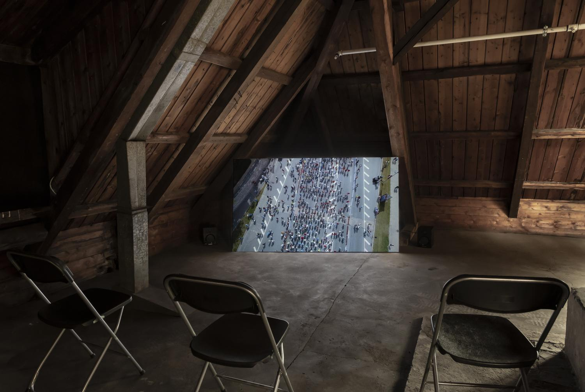
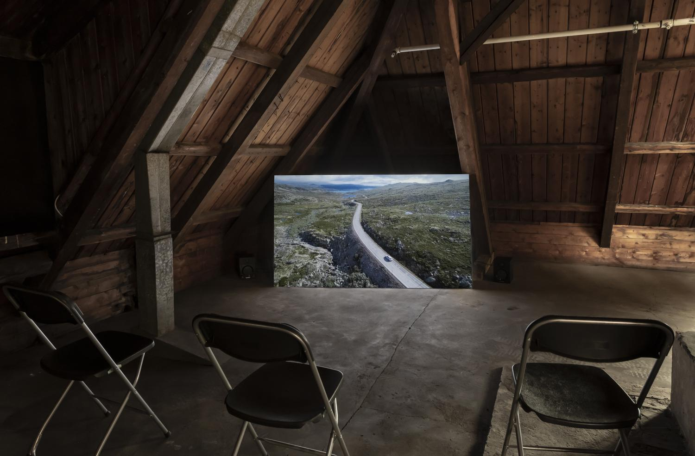
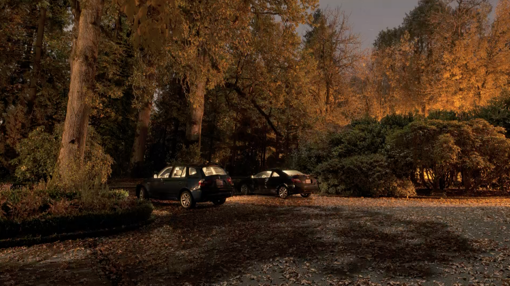
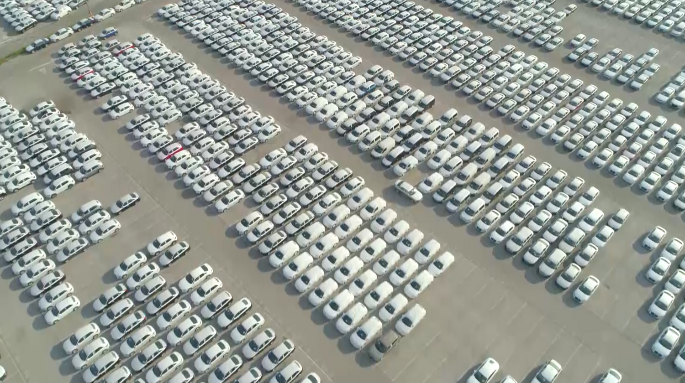

Transmit
Digital video
8.47 min. Loop
2019
Transmit is a film structured by a montage of stock videos and images; majestic landscapes, cars, flowers and marathon runners. These images act as commodities unbound of subjectivity, and are in Transmit assembled into a narrative reminiscent of the structure of a day. Together with the images, a voice over speaks about his restless night, vacation and his search for a sunset; a narration that have been submitted to and read/recorded by an unknown speech actor through an online service for voice-over productions and advertisement related.
Watch here   